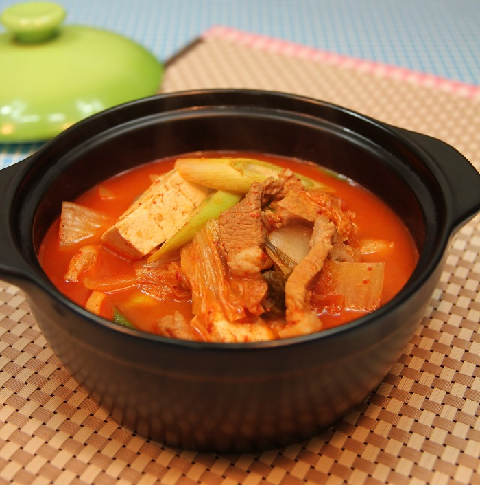
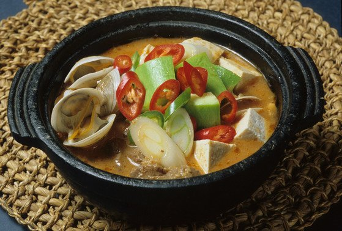

재료
밥, 애호박, 고기채, 콩나물, 당근, 피망, 표고버섯 / 취향에 따라 추가 재료 준비
고추장 양념
(고추장 1큰술, 고춧가루 1큰술, 설탕 1작은술, 다진 파 1작은술, 다진 마늘 1작은술, 깨소금 1작은술, 참기름 1작은술 )
1. 애호박, 당근, 피망, 표고버섯을 소금으로 간 조절을 하면서 볶는다
2. 고기채를 타지 않게 조절하며 익힌다
3. 콩나물은 손질 후 물에 넣고 끓여서 익힌다
4. 밥 위에 재료들을 차례대로 올린다
5. 그 위에 고추장 양념을 올린다
닫기
· 주재료 : 미역(마른것) 5줌(20g)
· 부재료 : 쇠고기(양지머리) 120g, 물 8컵(1,600ml), 재래간장 1과 1/2큰술(22ml), 마늘(다진 마늘) 1큰술(10g), 소금 작은술(3g), 참기름 작은술(5ml)
1. 마른 미역은 찬물에 담가 10분간 불린다. 찬물에 바락바락 씻어 거품이 나오지 않을 때까지 헹군다.
2. 물기를 꼭 짠 후 적당한 크기로 자른 후 재래간장 1/2큰술을 넣고 조물조물 무친다.
3. 쇠고기는 한입 크기로 썬 후 달군 냄비에 참기름을 두르고 쇠고기, 마늘을 넣어 볶다가 쇠고기가 거의 익으면 미역을 넣고 볶는다.
4. 03에 물을 넣고 한소끔 끓인다. 재래간장과 소금으로 간하고 더 끓인다. (물 대신 쌀뜨물을 넣으면 더욱 구수하고 맛있는 미역국을 만들 수 있다.)
닫기
고구마줄기 200그램 (으로 만든 고구마줄기 볶음)
무 약 10센치
애호박 1개
당근 1개
양파 1개
가지 3개
표고버섯 8개
계란 4개
청포묵
1. 고추장에 물을 약간 넣고 너무 묽지 않게 물에 개어서 비빔밥에 넣으면 비빔밥에 고추장이 너무 많이 들어가지도 않고 한 곳에 뭉치는 일도 없이 골고루 부드럽게 잘 비벼진다
2. 양파는 적당히 썰어서 소금간을 약간 하고 달달 볶고
3. 당근도 얇게 채썰어서 소금간을 약간 하고 달달 볶았다.
4. 표고버섯은 데쳐서 볶는 걸 좋아하는데 더 편하게 하려고 그냥 무나물에 남은 육수에 조린다.
5. 계란에 소금을 약간 넣고 잘 풀어서 지단을 얇게 부쳤다.
닫기
재료:삼계탕 닭(영계), 찹쌀, 삼계탕 육수, 인삼 1뿌리, 황기 2뿌리,
대추 3개, 마늘 4개, 생각, 통후추,
월계수잎 2개, 대파뿌리10cm, 물 1.4L, 청추 1큰술
1. 말린 인삼, 황기는 물에 2시간 불려 뇌두를 잘라냅니다. 찹쌀은 물에 1시간 부렸다가 체에 밭쳐 물기를 뺍니다.
2. 밤은 껍질을 벗기고 대추는 씻어 물에 불린 후 똘려깍아 씨를 뺍니다. 마늘은 두드려 향이 우러나게 하고 은행은
기름 없이 약한 불에서 살짝 볶아 껍질을 벗깁니다.
3. 밤, 마늘, 찹쌀, 은행, 대추 순서로 넣은 후 닭다리 안 쪽에 구멍을 내고 반대쪽 다리를 끼워 오므려 주세요
4. 물을 끓이면서 닭, 대파뿌리를 넣고 청주 1큰술 뿌리고 닭을 넣고 뚜껑을 연채 센불로 5분간 끓여 누린내를 날립니다.
5. 중간에 뜨는 거품을 제거해주세요
6. 찹쌀이 완전히 익으면 불을 끄고 닭을 건져내고 육수를 면포에 걸러 식혀 기름을 걷어냅니다.
7. 삼계탕 그릇에 육수를 부어서 맛있게 먹어주세요
닫기
재료: 불고깃감 200g , 양파 1/2개, 대파1대, 당근 1/3개, 버섯, 시금치, 당면 등 취향 껏
1. 채소는 도톰하게 썰어야 물기가 적게 나와요. 양념에는 참치액을 1/2T 추가하고 다시 육수를 고기가 자박하게 잠길 정도로만 준비해주세요
2. 양념을 고기에 넣어서 미리 조물조물해주세요
3. 강불에 볶아주세요
4. 끗
닫기
재료: 소 양지, 콩나물(or숙주), 불린 고사리, 느타리버섯, 대파 10cm, 다시마 10cm, 물, 달걀, 식용유 1T, 참기름 2T, 고춧가루 3T, 다진마늘, 2T, 국간장 2T, 소금,
1/2T, 후추 약간
1. 생수 1L에 다시마 2장을 넣고 약20분 이상 불려 다시마 물을 만든다
2. 소고기는 찬물에 담가 핏물을 빼고 불린 고사리는 칼로 먹기 좋게 썰고, 느타리버섯은 하나하나 때로, 대파는 반 자르고 숙주는 깨끗이 씻어 준비 한다
3. 냄비에 식용유, 참기름, 고춧가루 넣고 볶는다
4. 고사리와 느타리버섯, 숙주를 넣는다
5. 다시마 물을 붓고 다진 마늘2T, 국간장2T 싱거우면 소금 1/2T를 넣는다
6. 30분간 끓인 후 대파와 달걀물을 올려 한소끔 끓인 후 완성한다
닫기
재료: 청포묵(300g), 오이(½개), 홍고추(1개), 새우(5마리), 달걀(1개), 소고기(잡채용 100g) 식초(0.5)+보해 맛술(1)+간장(1)+
고추냉이(0.3)+참기름(1)+참깨(약간) 보해 맛술(2), 간장(1), 다진 마늘(약간), 후춧가루(약간)
1. 청포묵은 6cm 길이로 얇게 채 썰고, 오이와 홍고추도 같은 길이로 채 썰고, 새우는 머리와 껍질을 제거하고,
2. 끓는 물(3컵)에 청포묵을 넣어 40초간 데친 뒤 건져 찬물에 헹궈 물기를 빼고.
3. 새우도 3분간 데쳐 건지고, 데친 청포묵에 양념장을 넣어 버무린 뒤 냉장실에 차게 두고,
4. 약한 불로 달군 팬에 흰자, 노른자를 분리해 지단을 만들어 6cm 길이로 채 썰고,
5. 양념한 소고기를 팬에 올려 중간 불로 4분간 볶아 식히고,
6. 그릇에 데친 청포묵을 담고 손질한 재료를 올려 마무리.
닫기

김치찌개
한국의 대표적인 음식인 김치를 활용하여 여러가지 재료들과 함께 끓여서 먹는 찌개음식이다

된장찌개
한국의 대표적인 발효 장들 중 하나인 된장을 활용해 만든 찌개 종류 음식 중 하나이다
미역국
미역과 소고기나 복어를 넣어서 끓인 국 음식이며 생일날에 먹는 음식으로 유명하다
비빔밥
여러가지 나물이나 고기를 밥과 비비고 양념장을 넣어 만든 한국 전통의 음식이다
삼계탕
닭에서 내장을 빼고 대추나 인삼, 찹쌀 등의 약재를 넣어 푹 끓은 후 먹는 한국의 대표적인 복날 음식이다
소불고기
돼지고기로 만든 것은 따로 돼지 불고기라고 한다. 구이에는 결합 조직이 적고 지방이 조금씩 산재해 있는 고기가 맛이 있고 연하기 때문에 안심이나 등심 등의 부위가 가장 많이
사용된다.
육개장
복날 음식인 개고기를 못먹는 사람들을 위해 쇠고기를 넣고 파와 나물을 많이 넣어서 끓인 국 음식이다
탕평채
조선 영조 재임시절 영조가 여러 당파들이 모인 자리에서 탕평책에 대해 의논할때 같이 화합하자는 뜻으로 만든 음식이다